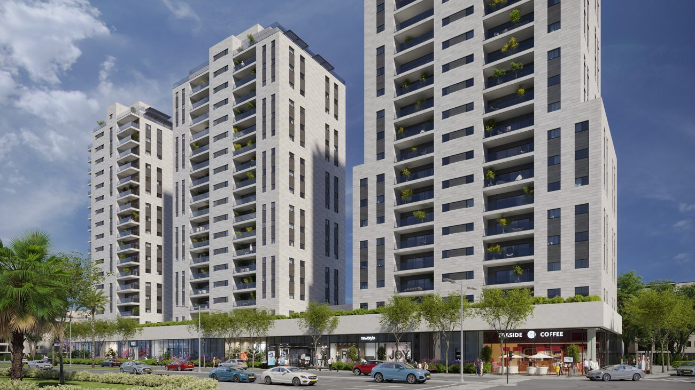
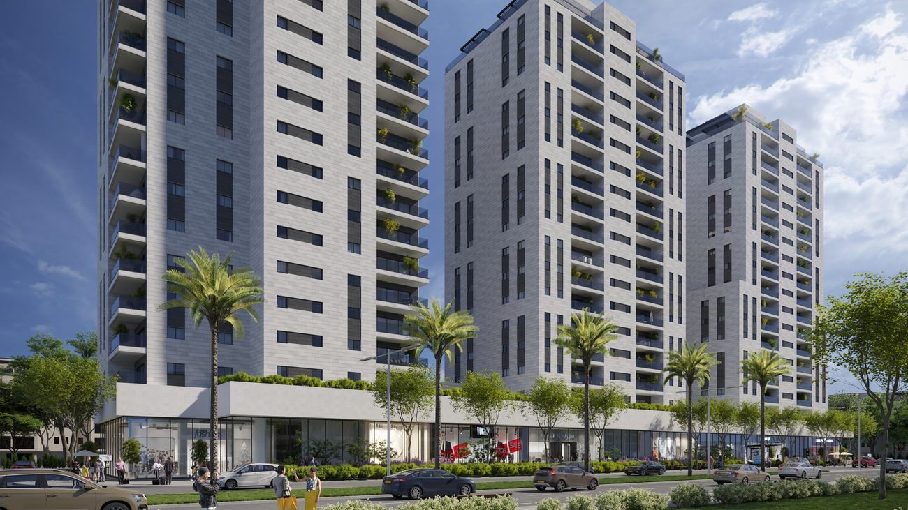

בתכנון · רישוי
העצמאות 28–32 · פינוי-בינוי.
שלושה מגדלי מגורים מודרניים מעל קומת מסחר עירונית — 192 דירות חדשות בלב יבנה, בנגישות לצירי תחבורה ולטיילת נחל יבנה.
שלושה מגדלי מגורים מודרניים מעל קומת מסחר עירונית — 192 דירות חדשות בלב יבנה, בנגישות לצירי תחבורה ולטיילת נחל יבנה.
ברחוב העצמאות 28–32, בליבה של יבנה, מתוכנן אחד מפרויקטי הפינוי-בינוי המשמעותיים בעיר: הבניינים הוותיקים יפנו את מקומם לשלושה מגדלי מגורים עכשוויים, שיקומו מעל קומת מסחר עירונית פעילה. בין המגדלים — גינה מוצלת לרווחת הדיירים, ומתחת — חניון תת-קרקעי רחב שמפנה את הרחוב מהמכוניות.
בלב העיר, בנגישות נוחה לצירי התחבורה הראשיים
בתמהיל מגוון: 4–5–6 חדרים, פנטהאוזים ודירות גן
מעל קומת מסחר עירונית — בתי קפה, חנויות ושירותים
הפרויקט מקודם מול הוועדות; הדיירים מלווים לאורך כל הדרך
הפרויקט מחליף מרקם בנייה ישן ומתפורר במתחם מגורים בן זמננו: שלושה מגדלים בקו אדריכלי נקי, עם לובאים מעוצבים, מעליות מהירות וממ"ד בכל דירה. התמהיל רחב במיוחד — מדירות 4 חדרים למשפחות צעירות, דרך דירות 5 ו-6 חדרים מרווחות, ועד פנטהאוזים ודירות גן — כך שהשכונה החדשה תהיה מגוונת באמת.
קומת המסחר בבסיס המגדלים היא לב הרעיון העירוני של הפרויקט: במקום קומת קרקע אטומה, רחוב פעיל עם חזיתות מסחריות, שמחזיר את החיים למדרכה. הגינה המשותפת בין המגדלים מתוכננת כמרחב מפגש שכונתי — מוצל, נטוע ובטוח לילדים.
תהליך פינוי-בינוי מעורר אצל דיירים שאלות מוצדקות: מתי מפנים, מי משלם על השכירות, ומה קורה אם משהו מתעכב. בפרויקט העצמאות התשובות מעוגנות בחוזה: מימון מלא של שכר הדירה לכל תקופת הבנייה, ערבויות חוק מכר על הדירה החדשה, וליווי משפטי עצמאי לדיירים על חשבון היזם. שקיפות מלאה בכל שלב — כך בונים אמון של רחוב שלם.
לדיירים הוותיקים זהו עסקת חייהם: דירה חדשה וגדולה יותר, עם ממ"ד, מרפסת ומעלית — ללא עלות, כולל מימון שכר דירה בתקופת הבנייה. ומאחורי ההתחייבות עומדת שלי גרופ: יזם שהוא גם הקבלן המבצע בסיווג ג'5, עם ליווי בנקאי מלא — אותו גורם שמתכנן, בונה ומוסר.
כל התמונות הן הדמיות אדריכליות להמחשה בלבד ואינן מהוות מצג מחייב.



רחוב העצמאות הוא מהצירים המרכזיים של יבנה הוותיקה — קרוב למוסדות העירוניים, למרכזים המסחריים ולתחנות התחבורה הציבורית. מהפרויקט מגיעים בקלות לטיילת נחל יבנה, ריאה ירוקה מטופחת לאורך הנחל, ולצירי היציאה המהירים לכיוון תל אביב, אשדוד וראשון לציון.
יבנה עצמה היא מסיפורי ההצלחה של השנים האחרונות: עיר שצומחת, משפחות צעירות שנכנסות, ומערכת חינוך מהמובילות בארץ. פרויקט העצמאות מתוכנן להיות חלק מהותי מהצמיחה הזו.
בין אם אתם דיירים במתחם או רוכשים עתידיים — השאירו פרטים ונעדכן אתכם בהתקדמות הרישוי ובפתיחת השיווק.